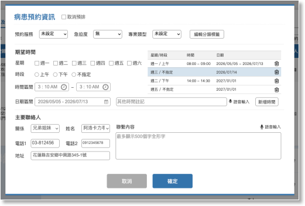
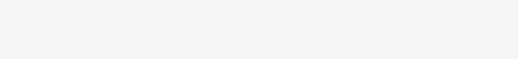

03-1-2-1-1 新增/編輯預約非儀器資訊


項目

內容
說明

取消預約

單選項

1. 勾選後點擊確定即可取消該筆預排
2. 若勾選取消預排，同時在聯繫資料中填寫內容，按確定後，記錄成一筆歷程；若只有勾選但沒有填入其他資料，則只要將排案狀態註記取消預約即可。

病患狀態

預約服務

1. 下拉選項：
- 治療
- 評估
- 檢查
2. 若是編輯舊資料，要帶出前一次的資料狀態。


急迫度

下拉選項
- 紅燈
- 黃燈
- 綠燈
- 灰燈


專業類型

下拉選項
- 溝通
- 吞嚥
- 溝通＋吞嚥


編輯分類標籤按鈕

1. 將選項分為兒童及成人兩個頁籤，可複選：
- 兒童：
- 舞台聯評
- 早療聯評
- 嬰幼兒/兒童吞嚥障礙
- 無口語
- 自閉症類群障礙
- 選擇性緘默症
- 學習/讀寫障礙
- 輔助溝通系統
- 聽能復健
- 顱顏異常
- 多重障礙
- 情緒障礙
- 重症照護
- 氣切呼吸器
- 安寧照護
- 居家照護
- MBS
- FEES
- 成人：
- 無口語
- 自閉症類群障礙
- 選擇性緘默症
- 學習/讀寫障礙
- 輔助溝通系統
- 聽能復健
- 顱顏異常
- 多重障礙
- 情緒障礙
- 重症照護
- 氣切呼吸器
- 安寧照護
- 居家照護
- MBS
- FEES
2. 點選收合按鈕時，勾選的項目要暫存不清除，再次點開項目時，顯示暫存的資料，點選下方確定鈕才儲存。

期望時間

星期

複選元件
- 週一
- 週二
- 週三
- 週四
- 週五
- 週六
時段
單選元件
- 上午
- 下午
- 不指定


時間區間

1. 12小時制
2. 半小時一個刻度
3. 起迄時間需合常理(新增時間記錄時要檢查)

日期區間

1. 起迄使用日曆元件
2. 其他時間註記最多可輸入500個全形文字，可語音輸入轉文字。

新增時間按鈕

點選新增後，右側表格加入一筆資料；點選表格任一筆資料可修改並覆蓋資料。

主要聯絡人

1. 預設帶出系統中註記的主要聯絡人資料，吞嚥系統資料優先，HIS資料次之。
2. 若在此填寫不同的資料，存檔時先比對吞嚥系統中聯絡人姓名，相同的姓名只更新其他欄位資料的聯絡人，若沒有相同姓名則新增一筆資料，並變更系統中的主要聯絡人資訊。
與病人關係
下拉選項(選項來自HIS系統的主要照顧者)
- 本人
- 夫妻
- 父母
- 兒女
- 兄弟姐妹
- 外籍看護工
- 其他


姓名

文字輸入框，預設帶入的主要聯絡人資料。
電話1
文字輸入框，預設帶入的主要聯絡人資料。
電話2
文字輸入框，預設帶入的主要聯絡人資料。
地址
文字輸入框，預設帶入的主要聯絡人資料。
聯繫內容
文字輸入框，最多可輸入500個全形文字，可語音輸入轉文字。